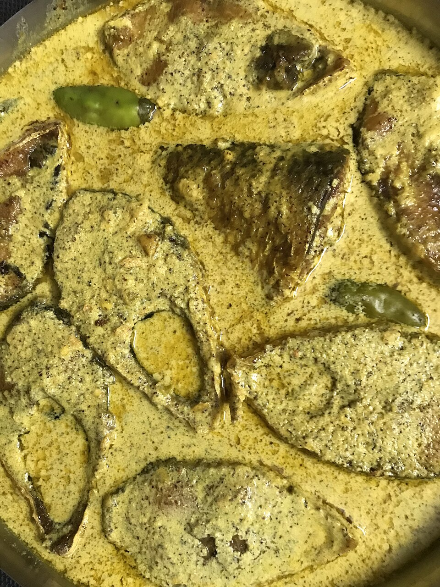

Home
Ilish-Maach

Description
To prepare traditional Bengali Hilsa fish curry (Shorshe Ilish), begin by gently washing thick cuts of fresh Ilish and marinating them with turmeric powder and sea salt. Lightly warm mustard oil in a heavy pan, tempering it with nigella seeds (kalonji) and split green chilies to release a sharp, pungent aroma before adding a freshly ground paste of yellow and black mustard seeds.
Simmer the vibrant mustard gravy on medium-low heat with a pinch of turmeric and water, then gently place the marinated fish steaks directly into the simmering broth. Allow the delicate fish to steam thoroughly in the aromatic mustard sauce until tender, finishing with a drizzle of raw mustard oil and freshly slit green chilies for an authentic Bengali flavor prior to serving alongside steaming white rice.
- Ilish (Hilsa) fish: 4–5 thick steaks
- Mustard oil: 3 tablespoons
- Yellow & black mustard paste: 3 tablespoons
- Green chilies: 5–6 pieces, slit lengthwise
- Nigella seeds (Kalonji): 1/2 teaspoon
- Turmeric powder: 1 teaspoon
- Red chili powder: 1/2 teaspoon
- Salt: To taste
- Warm water: 1 cup
- Clean the Ilish steaks and rub them evenly with half of the turmeric powder and a pinch of salt.
- Mix the mustard paste with warm water, red chili powder, remaining turmeric, and a dash of salt in a small bowl.
- Heat mustard oil in a wide pan until hot, then lower the flame and add nigella seeds along with 2 split green chilies.
- Pour the strained mustard mixture into the pan and bring it to a gentle, steady simmer.
- Carefully slide the marinated Ilish pieces into the simmering gravy in a single layer.
- Cover the pan and cook on low heat for 8–10 minutes, flipping the delicate fish steaks once halfway through.
- Top with remaining green chilies and a final drizzle of raw mustard oil, then remove from heat and serve hot.